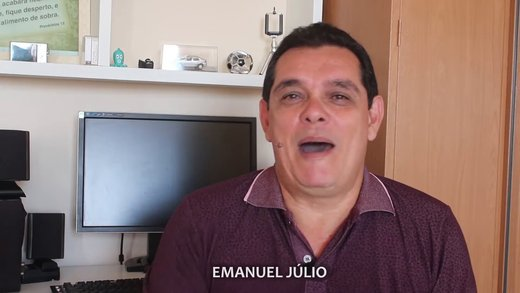

00:00:01.401
Emanuel Júlio, identificado no letreiro, fala à câmera de camisa vinho diante de uma televisão e estantes.
Local não identificado
O apresentador convida o público para uma série de viagens pela capital paraense.
Transcrição · 00:00:00
Turismo Aqui — quadro de vídeo publicado no YouTube